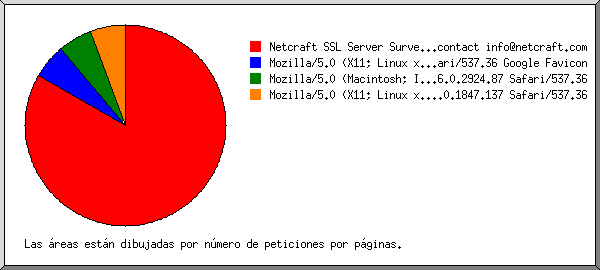

Estadísticas del servidor Web de pulsolaboral.com
Estadísticas del servidor Web de pulsolaboral.com
Programa iniciado a las Lun/27/Feb/2017 7:16 am.
Análisis de peticiones del Vie/03/Feb/2017 1:21 am al Dom/26/Feb/2017 10:17 am (23.37 días).
Estadísticas del servidor Web de pulsolaboral.comPrograma iniciado a las Lun/27/Feb/2017 7:16 am.
Análisis de peticiones del Vie/03/Feb/2017 1:21 am al Dom/26/Feb/2017 10:17 am (23.37 días).
(Ir a: Arriba | Resumen general | Informe mensual | Resumen diario | Resumen horario | Informe de dominios | Informe de organización | Informe de navegadores | Resumen de navegadores | Informe de Sistemas Operativos | Informe de códigos de estado | Informe de tamaño de archivos | Informe de Tipos de Archivo | Informe de Directorios | Informe de peticiones)
Los números entre paréntesis se refieren a 7 días al 27/Feb/2017 7:16 am.
Peticiones exitosas: 13 (1)
Peticiones exitosas por página: 5 (0)
Peticiones no logradas: 9 (0)
Peticiones redireccionadas: 7 (0)
Archivos diferentes solicitados: 7 (1)
Sistemas diferentes atendidos: 11 (1)
Transferencia total: 44.77 kilobytes (0 bytes)
Promedio de transferencia por día: 1.92 kilobytes (0 bytes)
(Ir a: Arriba | Resumen general | Informe mensual | Resumen diario | Resumen horario | Informe de dominios | Informe de organización | Informe de navegadores | Resumen de navegadores | Informe de Sistemas Operativos | Informe de códigos de estado | Informe de tamaño de archivos | Informe de Tipos de Archivo | Informe de Directorios | Informe de peticiones)
Cada unidad ( ) representa 1 petición de una página.
) representa 1 petición de una página.
| mes | No. pet. | Págs. | |
|---|---|---|---|
| Feb 2017 | 13 | 5 |  |
Mes de mayor tráfico: Feb 2017 (5 peticiones por páginas).
(Ir a: Arriba | Resumen general | Informe mensual | Resumen diario | Resumen horario | Informe de dominios | Informe de organización | Informe de navegadores | Resumen de navegadores | Informe de Sistemas Operativos | Informe de códigos de estado | Informe de tamaño de archivos | Informe de Tipos de Archivo | Informe de Directorios | Informe de peticiones)
Cada unidad () representa 1 petición de una página.
| día | No. pet. | Págs. | |
|---|---|---|---|
| Dom | 1 | 0 | |
| Lun | 2 | 0 | |
| Mar | 0 | 0 | |
| Mié | 1 | 0 | |
| Jue | 1 | 0 | |
| Vie | 2 | 2 |  |
| Sáb | 6 | 3 | |
(Ir a: Arriba | Resumen general | Informe mensual | Resumen diario | Resumen horario | Informe de dominios | Informe de organización | Informe de navegadores | Resumen de navegadores | Informe de Sistemas Operativos | Informe de códigos de estado | Informe de tamaño de archivos | Informe de Tipos de Archivo | Informe de Directorios | Informe de peticiones)
Cada unidad () representa 1 petición de una página.
| hr | No. pet. | Págs. | |
|---|---|---|---|
| 0 | 0 | 0 | |
| 1 | 3 | 2 | |
| 2 | 0 | 0 | |
| 3 | 0 | 0 | |
| 4 | 0 | 0 | |
| 5 | 0 | 0 | |
| 6 | 1 | 1 | |
| 7 | 0 | 0 | |
| 8 | 0 | 0 | |
| 9 | 0 | 0 | |
| 10 | 1 | 0 | |
| 11 | 0 | 0 | |
| 12 | 0 | 0 | |
| 13 | 0 | 0 | |
| 14 | 3 | 1 | |
| 15 | 0 | 0 | |
| 16 | 2 | 1 | |
| 17 | 0 | 0 | |
| 18 | 0 | 0 | |
| 19 | 1 | 0 | |
| 20 | 0 | 0 | |
| 21 | 2 | 0 | |
| 22 | 0 | 0 | |
| 23 | 0 | 0 |
(Ir a: Arriba | Resumen general | Informe mensual | Resumen diario | Resumen horario | Informe de dominios | Informe de organización | Informe de navegadores | Resumen de navegadores | Informe de Sistemas Operativos | Informe de códigos de estado | Informe de tamaño de archivos | Informe de Tipos de Archivo | Informe de Directorios | Informe de peticiones)
Listado de los dominios, ordenados por cantidad de tráfico.
| No. pet. | %bytes | dominio |
|---|---|---|
| 13 | 100% | [direcciones numéricas sin resolver] |
(Ir a: Arriba | Resumen general | Informe mensual | Resumen diario | Resumen horario | Informe de dominios | Informe de organización | Informe de navegadores | Resumen de navegadores | Informe de Sistemas Operativos | Informe de códigos de estado | Informe de tamaño de archivos | Informe de Tipos de Archivo | Informe de Directorios | Informe de peticiones)
Listado de las organizaciones, ordenadas por número de peticiones.
| No. pet. | %bytes | organización |
|---|---|---|
| 8 | 27.73% | 66.249 |
| 2 | 36.13% | 138.197 |
| 1 | 18.07% | 66.240 |
| 1 | 178.255 | |
| 1 | 18.07% | 174.138 |
(Ir a: Arriba | Resumen general | Informe mensual | Resumen diario | Resumen horario | Informe de dominios | Informe de organización | Informe de navegadores | Resumen de navegadores | Informe de Sistemas Operativos | Informe de códigos de estado | Informe de tamaño de archivos | Informe de Tipos de Archivo | Informe de Directorios | Informe de peticiones)

Listado de los navegadores que representan, por lo menos, 1 petición de una página, ordenados por número de peticiones por páginas.
| No. pet. | Págs. | Navegador |
|---|---|---|
| 3 | 3 | Netcraft SSL Server Survey - contact info@netcraft.com |
| 2 | 1 | Mozilla/5.0 (X11; Linux x86_64) AppleWebKit/537.36 (KHTML, like Gecko) Chrome/49.0.2623.75 Safari/537.36 Google Favicon |
| 1 | 1 | Mozilla/5.0 (X11; Linux x86_64) AppleWebKit/537.36 (KHTML, like Gecko) Chrome/34.0.1847.137 Safari/537.36 |
| 7 | 0 | [no listados: 2 Navegadores] |
(Ir a: Arriba | Resumen general | Informe mensual | Resumen diario | Resumen horario | Informe de dominios | Informe de organización | Informe de navegadores | Resumen de navegadores | Informe de Sistemas Operativos | Informe de códigos de estado | Informe de tamaño de archivos | Informe de Tipos de Archivo | Informe de Directorios | Informe de peticiones)
Listado de los navegadores que representan, por lo menos, 1 petición de una página, ordenados por número de peticiones por páginas.
| no. | No. pet. | Págs. | Navegador |
|---|---|---|---|
| 1 | 3 | 3 | Netcraft SSL Server Survey - contact info@netcraft.com |
| 2 | 3 | 2 | Safari |
| 3 | 2 | Safari/537 | |
| 7 | 0 | [no listados: 2 Navegadores] |
(Ir a: Arriba | Resumen general | Informe mensual | Resumen diario | Resumen horario | Informe de dominios | Informe de organización | Informe de navegadores | Resumen de navegadores | Informe de Sistemas Operativos | Informe de códigos de estado | Informe de tamaño de archivos | Informe de Tipos de Archivo | Informe de Directorios | Informe de peticiones)
Listado de los sistemas operativos, ordenados por número de peticiones por páginas.
| no. | No. pet. | Págs. | SO |
|---|---|---|---|
| 1 | 10 | 3 | Sistema Operativo desconocido |
| 2 | 3 | 2 | Unix |
| 3 | 2 | Linux |
(Ir a: Arriba | Resumen general | Informe mensual | Resumen diario | Resumen horario | Informe de dominios | Informe de organización | Informe de navegadores | Resumen de navegadores | Informe de Sistemas Operativos | Informe de códigos de estado | Informe de tamaño de archivos | Informe de Tipos de Archivo | Informe de Directorios | Informe de peticiones)
Listado de los códigos de estado, por orden numérico.
| No. pet. | cód. de estado |
|---|---|
| 13 | 200 OK |
| 7 | 302 Documento encontrado en otro lado |
| 9 | 404 Documento no encontrado |
(Ir a: Arriba | Resumen general | Informe mensual | Resumen diario | Resumen horario | Informe de dominios | Informe de organización | Informe de navegadores | Resumen de navegadores | Informe de Sistemas Operativos | Informe de códigos de estado | Informe de tamaño de archivos | Informe de Tipos de Archivo | Informe de Directorios | Informe de peticiones)
| tamaño | No. pet. | %bytes |
|---|---|---|
| 0 | 1 | |
| 1B- 10B | 0 | |
| 11B- 100B | 6 | 0.31% |
| 101B- 1kB | 0 | |
| 1kB- 10kB | 6 | 99.69% |
(Ir a: Arriba | Resumen general | Informe mensual | Resumen diario | Resumen horario | Informe de dominios | Informe de organización | Informe de navegadores | Resumen de navegadores | Informe de Sistemas Operativos | Informe de códigos de estado | Informe de tamaño de archivos | Informe de Tipos de Archivo | Informe de Directorios | Informe de peticiones)
Listado de las extensiones que representan, por lo menos, 0.1% del tráfico, ordenadas por cantidad de tráfico.
| No. pet. | %bytes | extensión |
|---|---|---|
| 5 | 90.34% | [directorios] |
| 1 | 9.35% | .ico |
| 7 | 0.31% | .txt [Plain text] |
(Ir a: Arriba | Resumen general | Informe mensual | Resumen diario | Resumen horario | Informe de dominios | Informe de organización | Informe de navegadores | Resumen de navegadores | Informe de Sistemas Operativos | Informe de códigos de estado | Informe de tamaño de archivos | Informe de Tipos de Archivo | Informe de Directorios | Informe de peticiones)
Listado de los directorios que representan, por lo menos, 0.01% del tráfico, ordenados por cantidad de tráfico.
| No. pet. | %bytes | directorio |
|---|---|---|
| 12 | 90.65% | [directorio raíz] |
| 1 | 9.35% | /img/ |
(Ir a: Arriba | Resumen general | Informe mensual | Resumen diario | Resumen horario | Informe de dominios | Informe de organización | Informe de navegadores | Resumen de navegadores | Informe de Sistemas Operativos | Informe de códigos de estado | Informe de tamaño de archivos | Informe de Tipos de Archivo | Informe de Directorios | Informe de peticiones)
Listado de los archivos que representan, por lo menos, 20 peticiones, ordenados por número de peticiones.
| No. pet. | %bytes | última hora | archivo |
|---|---|---|---|
| 13 | 100% | 26/Feb/2017 10:17 am | [no listados: 3 archivos] |